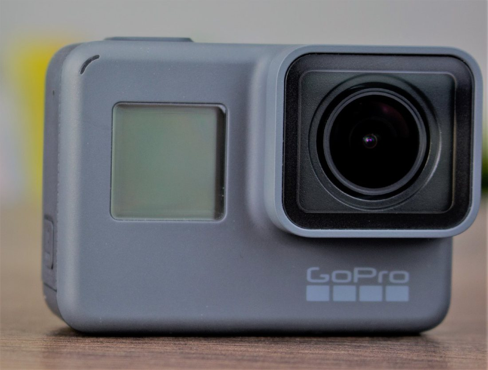

The Autopsy Report · Device #081
The GoPro HERO5 Black
GoPro's 2016 action camera: an Ambarella video processor, a Sony image sensor, and one of the most readable boards in this batch.
What is this thing?
The GoPro HERO5 Black is GoPro's 2016 action camera, launched in the fall of 2016. An independent technical teardown published October 11, 2016 describes opening “the new GoPro HERO5” — its hardware survey notes a sealed, waterproof body construction (including waterproof microphone channels) and its software survey finds voice-recognition components. Hypoxic teardown
Inside, an independent technical teardown identified one of the most readable boards in this batch: an Ambarella A9 video processor, a Sony IMX117 image sensor, and a full supporting cast with legible part numbers. Hypoxic teardown
Not yet on our bench
This device is not on our bench. We don't own one, we haven't opened one, and we haven't powered one on. Everything on this page comes from public records: government filings, published teardowns by repair shops and journalists, and manufacturer documents. That's a legitimate way to learn a device's story — and it's also a limited one. There are no BareBoard photos, measurements, boot logs, or firmware notes here, because we haven't earned them yet.
When a unit of the HERO5 Black does reach our bench, this page gets a second edition: our own board photography, our own measurements, and whatever the device tells us when it wakes up. Until then, what follows is the public record, carefully sourced, with the gaps labeled as gaps.
A short history
- August 6, 2016The FCC grants equipment authorization under ID CNFASST1, registered to GoPro, Inc. FCC filing
- Fall 2016GoPro launches the HERO5 Black; an independent teardown published October 11, 2016 is already opening “the new GoPro HERO5.” Hypoxic teardown
- October 2016An independent technical teardown opens the HERO5 and documents the board chip by chip — one of the most thorough public teardowns in this batch. Hypoxic teardown
- December 14, 2016GoPro publishes open-source libraries for the camera, per the teardown author's notes. Hypoxic teardown
The outside
The classic GoPro brick: a rear touchscreen and a front status display — the teardown documents separate boards for each — with the lens behind replaceable protective glass and the body sealed against water. Hypoxic teardown
The photo below is a HERO5 Black from the front, as sold.

The board
The independent teardown describes a dense, multi-board stack: the main board carries the Ambarella processor and Sony sensor, with separate boards for the front status display, the rear touchscreen, and power — all tied together with board-to-board connectors. Hypoxic teardown
The teardown identifies most parts by reading their markings directly — an unusually legible board, as these things go. Hypoxic teardown We have not photographed the board ourselves; the chip table below is that teardown's reading, marked accordingly.
Under the microscope: the chips
What's on the board, what each part does, and how sure we are — all from public teardown records, since we haven't seen the board ourselves. Likely means the public hardware record agrees on it. Confirmed is reserved for primary sources we could verify directly, like the government's own filing. Every row links somewhere you can read more.
| Chip | What it does | How we know | Dig deeper |
|---|---|---|---|
| Ambarella A9SE7 | The main video processor — encodes the 4K video. | Likely Read off the board in the independent teardown. | Hypoxic teardown |
| Sony IMX117 | The image sensor — the eye of the camera. | Likely Read off the board in the independent teardown. | Hypoxic teardown |
| Micron MT29UZ4B8DZZHGPB | Combined RAM and flash package. | Likely Read off the board in the independent teardown. | Hypoxic teardown |
| AMS AS3716 | Power management. | Likely Read off the board in the independent teardown. | Hypoxic teardown |
| u-blox UBX-M8030 | GPS receiver. | Likely Read off the board in the independent teardown. | Hypoxic teardown |
| Qualcomm QCA9377 | Wi-Fi/Bluetooth combo radio. | Likely Read off the board in the independent teardown. | Hypoxic teardown |
| FocalTech 3306DMB | Touchscreen controller for the rear display. | Likely Read off the board in the independent teardown. | Hypoxic teardown |
| Conexant CX20812 | Audio codec — voice control needs good mics. | Likely Read off the board in the independent teardown. | Hypoxic teardown |
| Bosch BMI160 | Accelerometer plus gyroscope — image stabilization data. | Likely Read off the board in the independent teardown. | Hypoxic teardown |
| Sitronix ST7796S + ST7570 | Display drivers for the front and rear screens. | Likely Read off the board in the independent teardown. | Hypoxic teardown |
| Atmel SAM D21E16A | Microcontroller — handles low-level housekeeping. | Likely Read off the board in the independent teardown. | Hypoxic teardown |
| Atmel ATSHA204A | Authentication chip — verifies genuine GoPro batteries. | Likely Read off the board in the independent teardown. | Hypoxic teardown |
| TI TPD13S523 | HDMI port protection. | Likely Read off the board in the independent teardown. | Hypoxic teardown |
All chip IDs come from a single independent teardown — thorough, but still one pair of eyes. They're marked Likely, not Confirmed, and we haven't verified any marking ourselves.
The government's file on this device
The HERO5 Black went through the FCC as CNFASST1, registered to GoPro, Inc. The grant is dated August 6, 2016. FCC filing Confirmed — straight from the filing index.
The filing lists 5 GHz Wi-Fi around 16.5–18.9 mW, 2.4 GHz Wi-Fi at 95 mW, and smaller Bluetooth entries around 1.4 and 11 mW. FCC filing The full exhibit and confidentiality detail for this filing is thinner than most in this batch — we report what's in the index and don't fill in the rest.
Debug and service modes
The independent teardown notes the camera's factory calibration contacts — pogo-pin pads used at the factory for bad-pixel, vignette, gyro, audio, and white-balance calibration. Mentioned here as a hardware fact, not an invitation: the teardown author states calibration “is not accessible without a firmware mod,” and we have never touched these contacts. Hypoxic teardown
We found no manufacturer-published hardware debug documentation for this model, and we have not entered any mode on any HERO5 Black. Listed for orientation, not from experience.
Our posture on all of the above: we describe what's publicly documented, and we don't go knocking. No device has been probed, reflashed, or opened on our bench — there is nothing here but reading.
What public records show
The Bluetooth radio never fully sleeps. The teardown author measured the camera's Bluetooth Low Energy radio staying on after power-off — waking the camera for the phone app — and shutting itself down after about 8 hours. That's a documented behavior with a real battery-life cost, discovered by measuring, not by reading a spec sheet. Hypoxic teardown
The battery authenticates itself. The ATSHA204A is an authentication chip the teardown places on the accessory path — “most likely on batteries too,” in the author's words — and the v1.55 firmware reportedly cut off third-party battery packs. That's a product-design fact about who controls the power supply, and it's worth knowing before you buy spares. Hypoxic teardown
What we haven't done
- We have not opened a HERO5 Black, photographed its board, or measured anything on it.
- We have not captured a boot log or probed the calibration contacts on this model.
- We have not verified any chip marking ourselves — the table is one teardown's reading.
- We do not describe, link to, or evaluate any method of bypassing the battery authentication — that's someone else's project, not an educational teardown's.
By the numbers
- Model: GoPro HERO5 Black (2016) Hypoxic teardown
- FCC ID: CNFASST1 FCC filing
- Main chip: Ambarella A9SE7 Hypoxic teardown
- Sensor: Sony IMX117 (same sensor as the HERO4, per the teardown) Hypoxic teardown
- Display: rear touchscreen + front status screen (separate boards) Hypoxic teardown
- Released: Fall 2016 Hypoxic teardown
- Wireless: Wi-Fi, Bluetooth Low Energy, GPS Hypoxic teardown
- Water resistance: sealed plastic body with waterproof mic channels, per the teardown Hypoxic teardown
Words to know
Every term this page uses, in plain English. No prior knowledge required.
- Image sensor
- The chip that turns light into digital pixels — the Sony IMX117 is the HERO5's eye.
- Video processor
- The chip that compresses the sensor's raw output into video files — the Ambarella A9's job.
- Bluetooth Low Energy (BLE)
- A low-power Bluetooth mode for staying connected without draining the battery — in theory.
- Authentication chip
- A chip that cryptographically proves a part is genuine — here, the battery.
- Pogo pin
- A spring-loaded test contact used in factories to touch pads on the board during calibration.
- FCC ID
- The ID the FCC assigns to each approved wireless product. Punch it into fccid.io and the whole public filing comes up.
Sources & confidence
- Chip identities: the independent October 2016 technical teardown by Hypoxic — the most thorough public teardown in this batch, but still one source. Marked Likely throughout — we haven't seen the board ourselves.
- FCC ID, grantee, grant date, and transmit powers: the FCC filing index for CNFASST1 — a primary source. High confidence.
- BLE behavior and battery authentication: the same independent teardown's measurements and notes — described as observed behavior, not verified by us.
- Launch window and headline specs: the device's encyclopedia entry, cross-checked against launch coverage.
- We deliberately omit the teardown article's discussion of authentication circumvention — it isn't educational teardown material, and it doesn't belong here.
- Anything not listed here is unknown until the bench says otherwise. We'll say so, out loud, when that's the case.